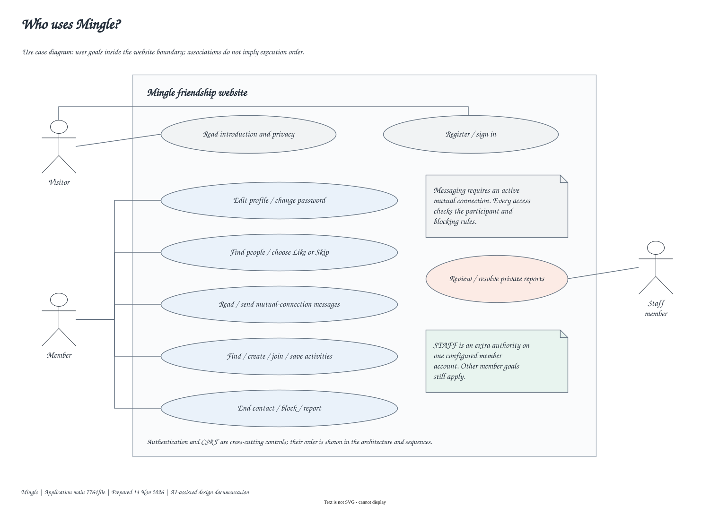
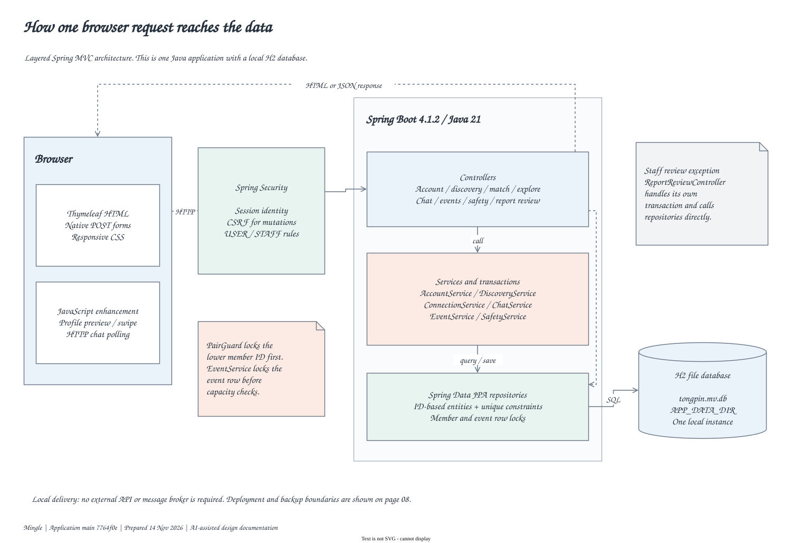
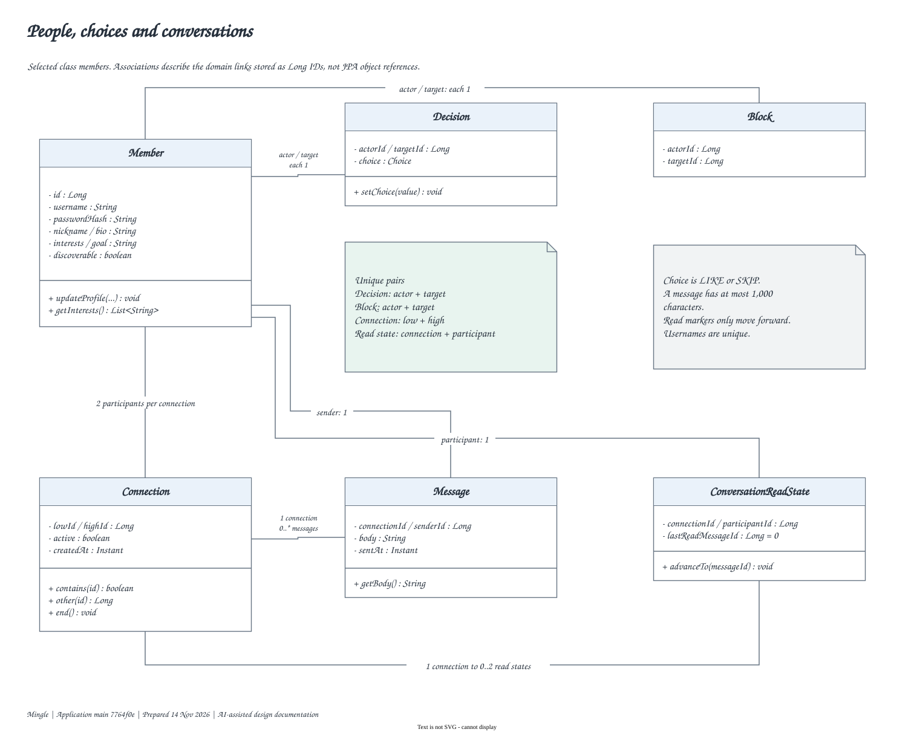
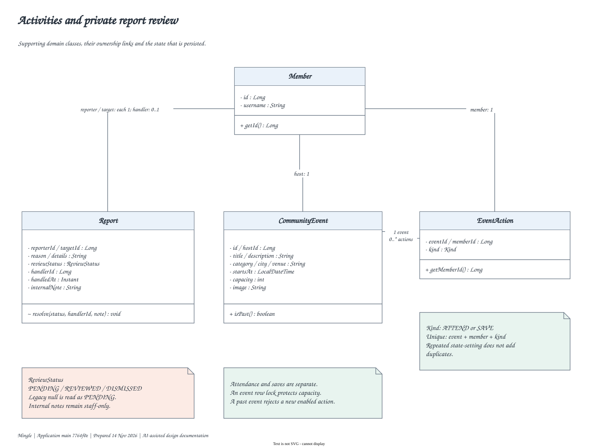
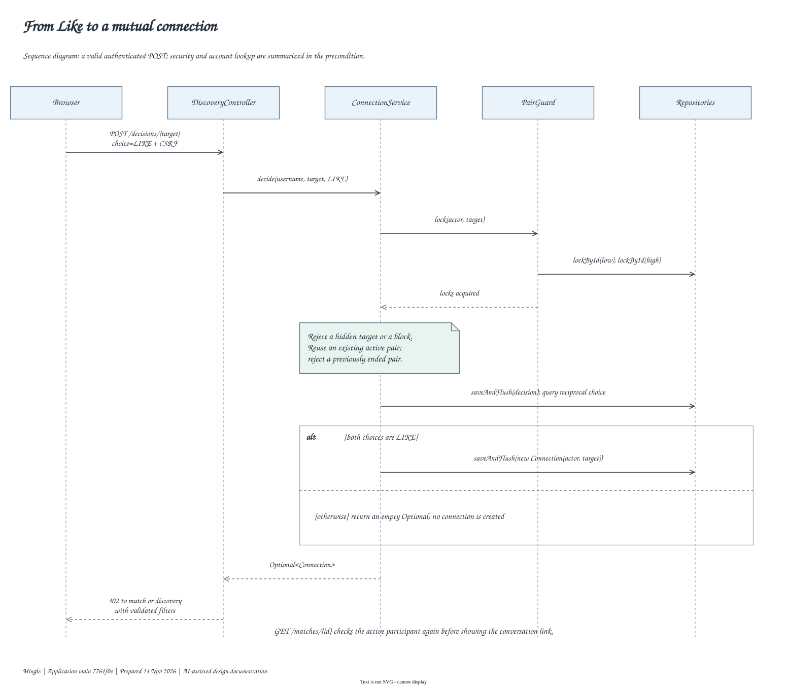
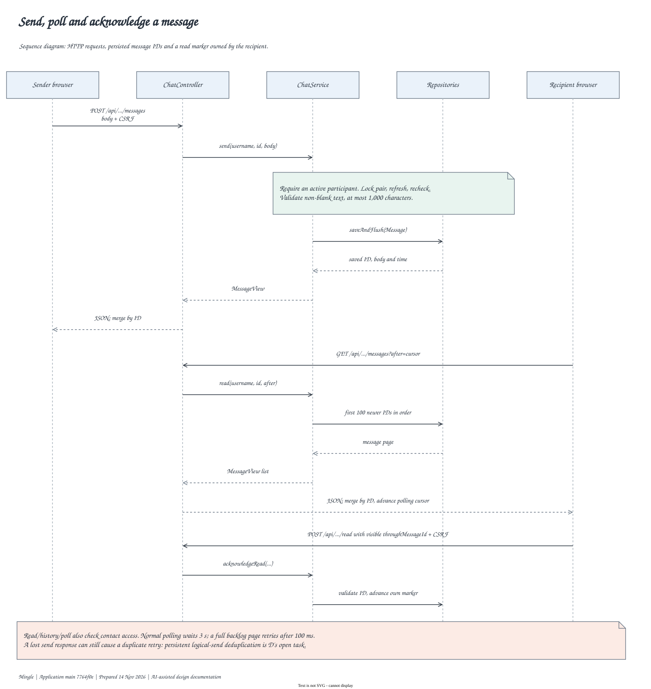
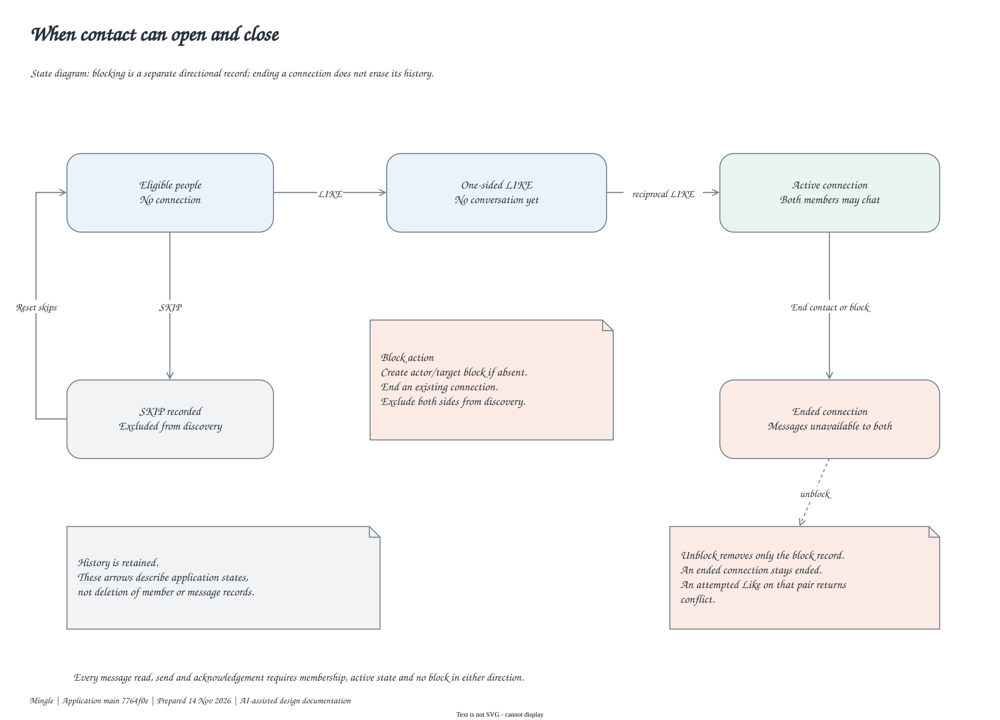
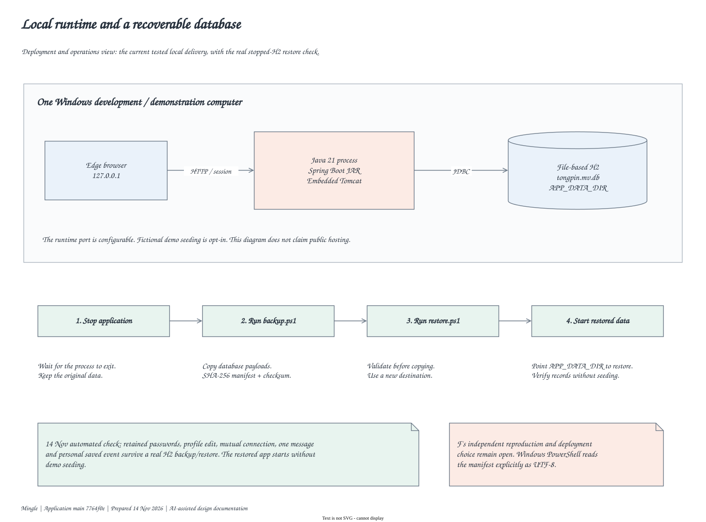
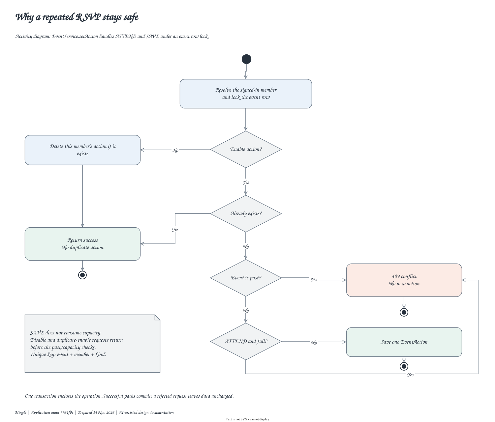
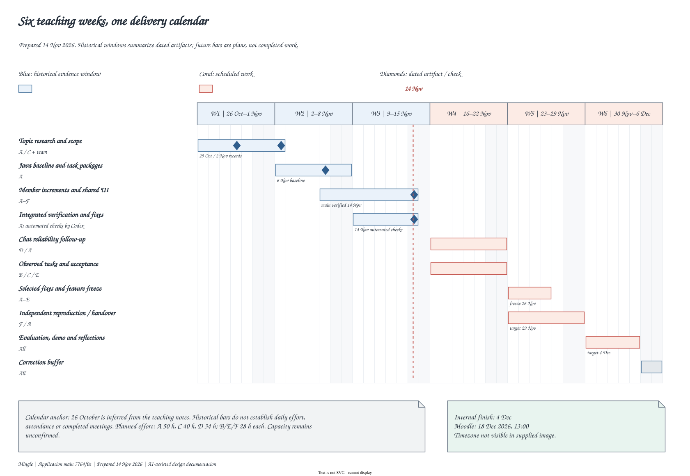

01 Use cases
Distinguish visitor, signed-in member and configured staff goals. An association shows participation, not an execution sequence.

02 Layered architecture
Trace the browser through Spring Security, controllers, transactional services, repositories and the local H2 store. The staff-review controller is shown as a real layering exception.

03 Core class model
Member, Decision, Connection, Message, Block and ConversationReadState store links as IDs. Selected fields and operations are shown, with uniqueness and cardinality rules.

04 Activity and report classes
Separate attendance from saves, and public activity information from private report handling. Persisted report status and handler details belong to the restricted review workflow.

05 Mutual-match sequence
Follow a valid Like through member-pair locking, access checks, decision persistence and reciprocal detection. Only an active mutual connection leads to chat.

06 Message and read-state sequence
Show send, recipient polling, older-history retrieval and acknowledgement as HTTP requests. Read state belongs to one participant. The diagram explicitly leaves logical-send retry deduplication open.

07 Contact state model
Separate mutual contact state from directional blocking. Ending retains history; unblocking removes the block without reactivating an ended connection.

08 Deployment and recovery
Show the tested single-machine runtime and the stopped-H2 backup/restore boundary. Restore creates a new destination and verifies checksums before reuse.

09 RSVP activity flow
Trace enable/disable, duplicate detection, past-event rejection and capacity checks within one transaction under the event row lock.

10 Six-week Gantt
Separate historical evidence windows and dated artifacts from planned work. Use the inferred teaching-week calendar and the current internal completion target.

AI-assisted design documentation. Exported from Draw.io with Comic Sans MS. The gallery uses local SVG files; no external resources are required.